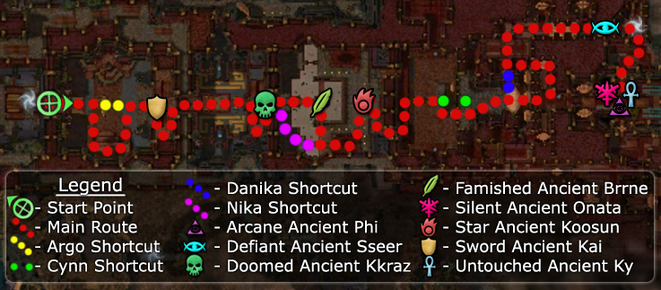

Elite: Auspicious Parry
M11
Raisu Palace
◉ Mission Map

Click to enlarge · Local cache · Wiki
Summary (click to expand)
The palace has been breached and Shiro has taken Emperor Kisu . Make your way through the Shiro'ken before it's too late.
Region: Kaineng City · Mission: 11 of 13 · Type: Cooperative
✓ Objectives
Get to the emperor before Shiro kills him!
- <Character name>, you must choose two allies from among these heroes to accompany the party.
- Master Togo must survive.
- Mhenlo must survive.
→ Walkthrough
Preparation
At the beginning of this mission, be sure to acquire a Celestial skill from Kuunavang. These skills are very powerful, and will recharge each time you defeat one of the many bosses in this mission. Take note that only player characters and henchmen can get Celestial skills; heroes cannot. As such, it is worth considering whether or not your hero build really is more effective than the warrior and elementalist henchmen as they get Storm of Swords and Celestial Storm respectively.
After that, the party leader has to choose two NPCs to join as allies. These NPCs will fight with you, but cannot be resurrected if they die, and will leave your party at a prescribed point during the mission (if they are still alive) to let your party skip a small section of the mission:
- Argo - Lets the party skip the first groups of Shiro'ken; thereby allowing the party to head straight to the Warrior boss.
- Cynn - Lets the party skip the group of Shiro'ken; this occurs before the bridges after the Elementalist boss.
- Danika - Closes a gate in a large room full of Shiro'ken; thereby providing the party with a faster alternate route to the Ritualist boss.
- Nika - Lets the party skip the Ranger boss.
- Panaku - Disables the Acid Traps in the corridor that leads to the Ritualist boss.
- Talon Silverwing - Closes the gates on the portal rooms after the Warrior boss; thereby containing the Shiro'ken in those rooms.
Choosing Danika, in addition to Talon, is recommended as being the most "time-efficient". If you chose Talon, you can skip the most combat-intensive segment of the mission that has the largest number of Shiro'ken. After the elementalist boss, if you chose Danika, the party can run past where Cynn's shortcut would be and activate Danika's; effectively giving you the benefits of both. Argo only skips an insignificant group of six or seven Shiro'ken. Panaku only disables the traps (that only deal 10-20 damage each and can be easily avoided); Panaku can also get body blocked by enemies during the cinematic and end up not disabling the traps.
The timer for the mission does not actually start until after the party leader has selected two allies, and walked through the gate that opens after the allies have been selected. In addition to the two allies selected, Master Togo and Mhenlo will also be accompanying the party.
Getting to the emperor
Room one, unless you chose Argo, you must go left or right around the outside of the room to reach the Warrior boss. It is advised to pull the boss as to not aggro the group behind him.
Boss two, if you chose Talon, the doors to the spawn portals close and you can approach and kill the Necromancer boss with ease. If you did not choose Talon, your party should run through the middle into the Necromancer group and be careful not to aggro the growing group of Shiro'ken forming in the middle of the room.
Boss three, if you chose Nika, you will skip the Ranger boss. Otherwise, you must defeat the Ranger boss atop the ramp. After killing the boss, turn left or right and begin pulling the small patrolling groups of enemies carefully in order to eliminate them before engaging the Elementalist boss. If you try and take Nika's route without having Nika with you, the Ranger boss runs around and onto the high point and engages you anyway.
Boss four, after pulling the groups near the Elementalist boss, engage and kill the boss group. Be mindful that Ritualists and Monks tend to hide on the stairs behind the boss and can resurrect or heal without pressure. If you chose Danika, be prepared to run.
Boss five, if you chose Danika, you must make a dash across the bridge behind this room, ignoring enemies from the spawn portals until the cinematic engages. You may be followed by a group from behind which you will have to defeat. This can be hard to do if your party has not discussed the run. After the cinematic, you must turn left and follow the outside wall until reaching the Ritualist boss. Stay on the carpet to avoid the Acid Traps.
Boss five, if you chose Cynn, the spawn portals are closed and you can fight your way across the bridge in the middle of the room. Once across, you must follow the multiple groups of enemies until reaching the Ritualist boss. Stay on the carpet to avoid the Acid Traps.
Boss five, if you chose Panaku, and he is still alive, the Acid Traps will be disabled making it possible for the party to stand where you like.
Boss six/seven/eight, the bosses in this mission are all just health and energy tank versions of their Shiro’ken offspring. Use the same kill order as before, making the Monk a priority, followed by the Assassin and Mesmer.
★ Bonus
See walkthrough and objectives for bonus details (if any).
◆ Hard Mode
No dedicated Hard Mode section on the wiki — expect tougher foes and adjusted mechanics. See walkthrough notes.
☠ Bosses & Elites
Elite: Famine
Elite: Spell Breaker
Elite: Wail of Doom
Elite: Wail of Doom
Elite: Arcane Languor
Elite: Star Burst
Elite: Shroud of Silence
Elite: Defiant Was Xinrae
✦ Tips & Notes
Skill recommendations
- Consider area damage over time skills, such as Ray of Judgment, to deal with the spirits created by Shiro'ken Ritualist.
- Minion masters should consider Blood of the Master to keep their minions alive from the Elementalist health degeneration.
- Because Shiro'ken Monks use Spell Breaker and Spell Shield, consider non-spell skills like "You Move Like A Dwarf!", "Finish Him!", or Brawling Headbutt to spike the Monks.
- Bring enchantment removal skills to deal with the Shiro'ken Elementalist's Sliver Armor and Shiro'ken Monk's Spell Breaker and Spell Shield.
- The foes in this mission have hex removal skills (Shiro'ken Monks have Reverse Hex and Shiro'ken Mesmers have Shatter Hex), but lack condition removal, so consider bringing skills that inflict conditions instead of hex spells. Consider bringing hex spells with an end effect that triggers when removed by a hex removal skill, such as Phantom Pain.
- Consider bringing skills that can affect multiple allies, since they will also affect the four non-party member allies.
- Consider bringing skills that prevent and remove burning as Shiro'ken Elementalists use Star Burst and Burning Speed.
Notes
- If you speak to Kuunavang you get a temporary Celestial skill which recharges when a boss is killed. If you replace Charm Animal, Comfort Animal, or Heal as One with a Celestial skill, your pet will still remain.
- The Gate Guard spawns immediately before the ending cinematic, as such, it cannot be killed.
- Make sure that the two ally henchmen you choose survive until the part that you want them to help you skip. If they die before they get there, they are unable to perform the action that will allow you to skip the room/boss.
- If you choose Danika, once you get past the elementalist boss run until you cross the bridge and a cinematic will start where you will see her lock the next room and reveal an alternate route that is far more pleasant. Be aware that you will be attacked from behind by a group of Shiro'ken once the alternate route is revealed.
- You must defeat all of the Shiro'ken bosses, including the final three, in order to complete the mission. This prevents the mission from being easily run by a single person.
- Completion of this mission will fill in page #10 of the Shiro's Return storybook.